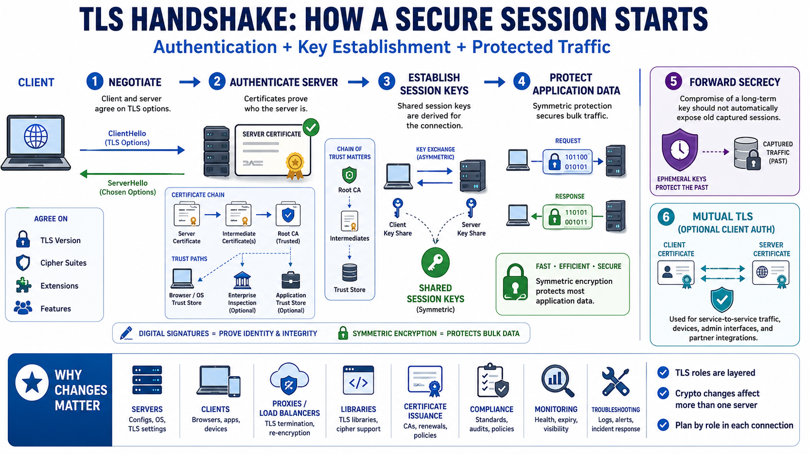

TLS Cryptographic Roles
Connecting to LMS... Progress: in progress

Narration
A TLS handshake is the setup conversation that lets two endpoints agree on how to protect the session. At a high level, the client and server negotiate protocol options, authenticate the server, establish shared session keys, and then use those keys to protect application data. The details vary by TLS version and configuration, but the practical roles are stable: authentication answers who the peer is, key establishment creates shared key material, and symmetric protection carries the bulk traffic.
Server authentication usually depends on certificates and certificate chains. A certificate binds a public key to a name or identity, and the client evaluates a chain of trust back to a trusted authority. That chain may involve certificate authorities, intermediate certificates, operating system trust stores, browser policy, enterprise inspection devices, and application-specific trust decisions. Changing signature algorithms or certificate formats can therefore affect more than one server.
Key establishment solves a different problem. It helps the endpoints derive session keys that protect the connection. Digital signatures help prove identity and integrity; they do not by themselves encrypt all application traffic. Symmetric encryption and integrity protection then protect the data after the handshake. Forward secrecy concepts add another important property: compromise of a long-term key should not automatically expose older captured sessions when the protocol is configured correctly.
Client authentication is another TLS use case, often seen in mutual TLS for service-to-service traffic, administrative interfaces, device identity, or partner integrations. Because TLS roles are layered together, changing cryptography can affect clients, servers, proxies, libraries, certificate issuance, compliance evidence, monitoring, and troubleshooting. Migration planning starts by asking what role the cryptography plays in each connection, not by assuming every TLS use case is the same.